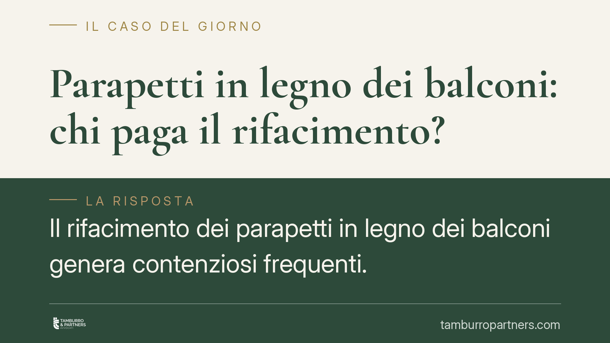

Parapetti in legno dei balconi: chi paga il rifacimento?
Il rifacimento dei parapetti in legno dei balconi genera contenziosi frequenti. La regola è che l'elemento privato resta a carico del proprietario, ma quando il parapetto concorre al decoro architettonico dell'edificio la spesa può gravare su tutto il condominio. Distinguere la funzione strutturale da quella estetica è decisivo, così come verificare il regolamento condominiale.

Il problema: bene privato o bene comune?
I balconi sono, di norma, di proprietà esclusiva del singolo condomino. Le spese di manutenzione dei loro elementi seguono questa proprietà. Il parapetto in legno, in quanto parte del balcone, tende quindi a essere considerato un bene privato, con manutenzione a carico di chi ne gode.
Questa impostazione, però, non è assoluta. La giurisprudenza di legittimità distingue tra la funzione strutturale/funzionale dell'elemento — che serve il singolo balcone — e la sua funzione estetica, quando l'elemento concorre al decoro architettonico dell'intero fabbricato. È questa distinzione la chiave del riparto.
Inquadramento normativo
Il riferimento generale è l'art. 1117 c.c., che elenca le parti comuni, e l'art. 1123 c.c., che detta i criteri di ripartizione delle spese. Quest'ultimo prevede tre regole: ripartizione in base ai millesimi di proprietà (comma 1), ripartizione in proporzione all'uso quando le cose servono i condomini in misura diversa (comma 2), ripartizione tra i soli condomini che ne traggono utilità quando l'impianto o la parte serve solo alcuni (comma 3).
Sul punto specifico dei balconi si è formato un consolidato orientamento della Corte di Cassazione. In sintesi: gli elementi che assolvono una funzione meramente privata (piano di calpestio, sottobalcone che serve solo l'unità) restano a carico del proprietario; gli elementi che si inseriscono nel prospetto e ne caratterizzano l'aspetto architettonico d'insieme — frontalini, rivestimenti, e talvolta i parapetti quando disegnano la facciata — sono considerati beni comuni sotto il profilo estetico, con spesa a carico di tutti.
> Nota redazionale: gli estremi esatti delle pronunce citate come orientamento sono in corso di verifica e verranno indicati solo dopo conferma del contenuto specifico. Fino ad allora il principio va inteso come indirizzo giurisprudenziale, non come massima puntuale.
Aggettanti o incassati: una distinzione che pesa
La natura del balcone incide sulla qualificazione della struttura.
Nel balcone aggettante (quello che sporge a sbalzo dalla facciata) la soletta è un prolungamento del solaio dell'appartamento e appartiene al proprietario. Restano potenzialmente comuni solo gli elementi decorativi che compongono il prospetto.
Nel balcone incassato (o incorporato, rientrante nella sagoma dell'edificio) la struttura orizzontale svolge spesso funzione di solaio divisorio tra due unità: in questo caso può ricadere nella comproprietà secondo la logica dell'art. 1125 c.c. La soluzione sulla parte strutturale è quindi diversa rispetto all'aggettante.
Il parapetto in legno segue il ragionamento generale: se è puro elemento di protezione a servizio del singolo, è privato; se è elemento di finitura che contribuisce all'estetica unitaria del fabbricato, la spesa si distribuisce sull'intera collettività.
Perché l'estetica sposta la spesa su tutti
Il criterio-guida è quello dell'utilità. Quando il parapetto concorre al decoro architettonico, il beneficio del suo mantenimento non è del solo proprietario ma dell'intero edificio, che ne trae valore e immagine. Per questo la spesa relativa alla componente estetica si ripartisce tra tutti i condomini secondo i millesimi (art. 1123, comma 1). Diversamente, la manutenzione della sola parte funzionale resta al proprietario del balcone.
Nella pratica le due componenti possono coesistere: si distingue allora la quota di costo attribuibile alla funzione estetica (comune) da quella attribuibile alla funzione privata (esclusiva).
Il ruolo del regolamento condominiale
Un passaggio spesso trascurato: il regolamento condominiale di natura contrattuale può derogare ai criteri legali di ripartizione. Se il regolamento qualifica espressamente i parapetti come parti comuni o ne disciplina la manutenzione, quella previsione prevale sulla regola generale. Prima di ogni valutazione va quindi letto il regolamento e verificato se sia contrattuale o assembleare.
Cosa fare in concreto
- Verifica il regolamento: controlla se qualifica i parapetti e come ripartisce la relativa spesa; distingui se è contrattuale o assembleare.
- Documenta la funzione: raccogli foto e, se serve, una perizia tecnica che chiarisca se il parapetto è elemento strutturale, decorativo o entrambi.
- Qualifica il balcone: accerta se è aggettante o incassato, perché cambia il regime della struttura.
- Chiedi la ripartizione motivata all'amministratore: pretendi che il riparto indichi il criterio applicato (art. 1123 c.c.) e la distinzione tra quota privata e quota comune.
- Formalizza in assemblea: porta la questione a delibera prima di avviare i lavori, per evitare contestazioni sulle quote.
Disclaimer
Contributo informativo a cura di Tamburro & Partners Avvocati - Avv. Giuseppe Tamburro. Non costituisce parere legale.
Ogni condominio ha una storia a sé.
Se gestisci un'amministrazione e vuoi un confronto su una specifica questione condominiale, scrivi allo studio. Ti rispondiamo entro un giorno lavorativo.